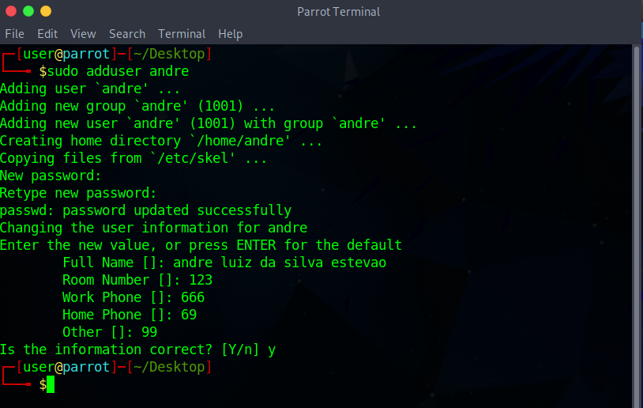
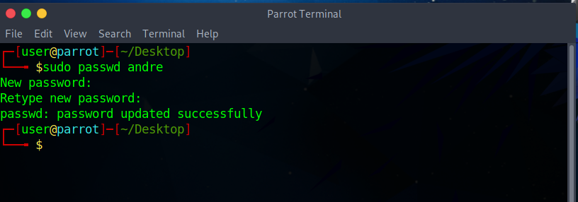
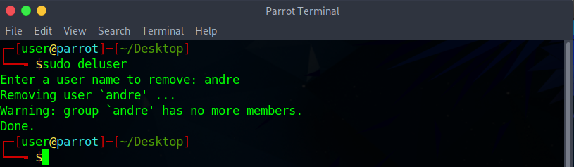
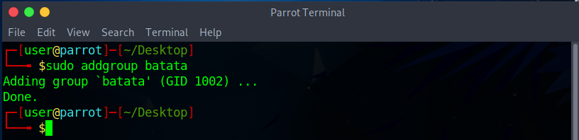
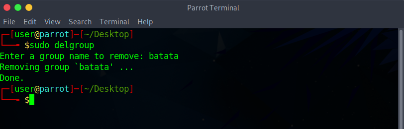
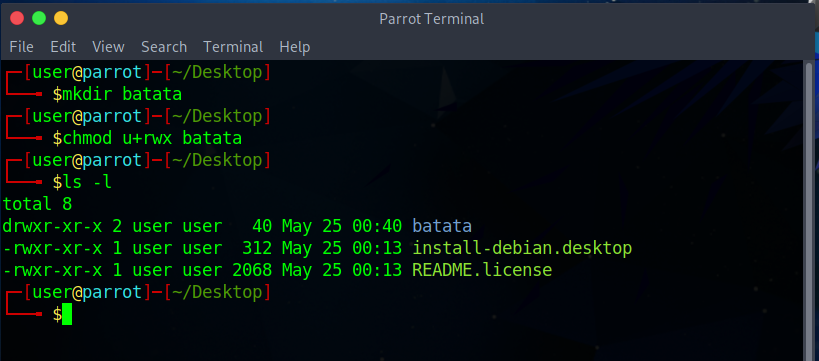

Administração do sistema
A administração do sistema no Linux envolve gerenciar usuários e grupos, configurar permissões de arquivos e diretórios, além de gerenciar serviços e a inicialização do sistema. Essas tarefas são essenciais para manter o sistema funcionando corretamente e garantir a segurança.
Gerenciamento de usuários e grupos
Para criar usuários e grupos no Linux, você pode usar comandos como:
sudo adduser nome_do_usuário:
Cria um novo usuário.
sudo passwd nome_do_usuário:
Define a senha para o usuário.
sudo deluser nome_do_usuário:
Remove um usuário.
sudo addgroup nome_do_grupo:
Cria um novo grupo.
sudo delgroup nome_do_grupo:
Remove um grupo.
Configuração de permissões de arquivos e diretórios
As permissões de arquivos e diretórios no Linux são controladas por três categorias: proprietário, grupo e outros. Você pode definir as permissões utilizando comandos como:
chmod: Altera as permissões de um arquivo ou diretório.
chown: Altera o proprietário de um arquivo ou diretório.
chgrp: Altera o grupo de um arquivo ou diretório.
Por exemplo, para conceder permissões de leitura, gravação e execução para o proprietário de um arquivo, você usaria o seguinte comando:
chmod u+rwx nome_do_arquivo
Gerenciamento de serviços e da inicialização do sistema
No Linux, os serviços são programas que são executados em segundo plano e fornecem funcionalidades específicas ao sistema. Alguns comandos comuns para gerenciamento de serviços são:
systemctl start nome_do_serviço: Inicia um serviço.
systemctl stop nome_do_serviço: Interrompe um serviço.
systemctl restart nome_do_serviço: Reinicia um serviço.
systemctl enable nome_do_serviço: Configura um serviço para iniciar automaticamente na inicialização do sistema.
systemctl disable nome_do_serviço: Desabilita a inicialização automática de um serviço.
Você pode listar os serviços ativos usando o comando systemctl list-units --type=service.
Essas são apenas algumas das tarefas básicas de administração do sistema no Linux. Ao aprender sobre gerenciamento de usuários, permissões e serviços, você estará apto a administrar seu sistema de forma eficiente e personalizada.